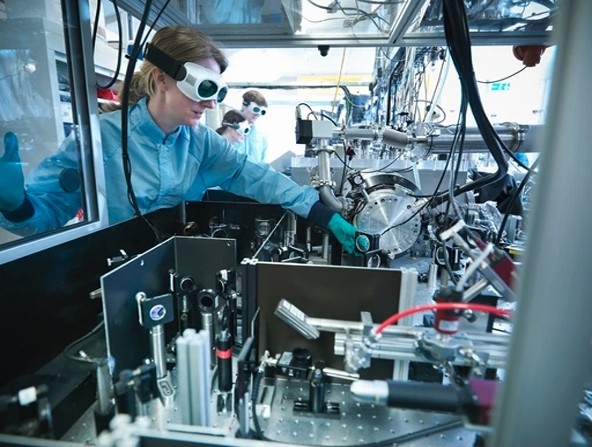
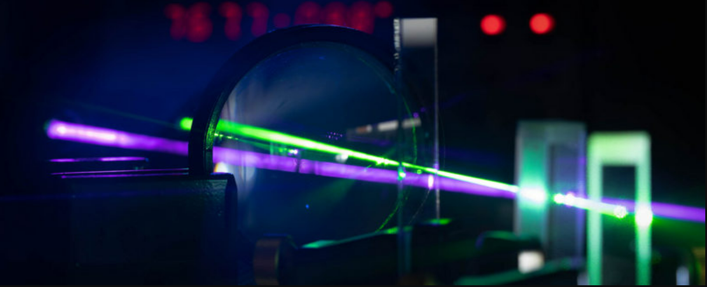

Precision Optical Systems
We design and build high-stability optical assemblies on vibration-isolated tables. This includes beam-shaping, interferometric setups, polarization control, and free-space coupling relevant to atomic physics experiments.
POSM's research is hardware-first and hands-on. We develop the physical instruments and infrastructure needed to conduct cutting-edge AMO and quantum systems experiments.
Our research program covers multiple technical domains. Each project is student-owned and advisor-guided. Some specifics are kept confidential at the direction of our PI — the descriptions below capture the spirit and scope of our work without disclosing proprietary details.
We design and build high-stability optical assemblies on vibration-isolated tables. This includes beam-shaping, interferometric setups, polarization control, and free-space coupling relevant to atomic physics experiments.

We develop servo electronics and digital control loops for narrow-linewidth laser frequency stabilization. Projects span Pound–Drever–Hall locking, saturation spectroscopy, and amplitude modulation control.

We assemble and characterize ultra-high vacuum systems for atomic physics experiments, including chamber integration, ion pumping, RGA diagnostics, and optical access design.

We design custom PCBs, work with FPGA-based control platforms, and build RF sources and measurement instruments. Projects include frequency synthesis, impedance matching, and real-time digital control.

We integrate fiber-optic components, photonic chips, and single-photon detectors into experimental platforms. This work bridges bench-top optics with scalable photonic integration approaches.
We build software for laboratory automation, data acquisition, and instrument control. This spans Python-based experiment sequencing, ARTIQ/Sinara integration, and custom GUI dashboards.
Equipment donations, fabrication support, and technical mentorship make our projects possible.